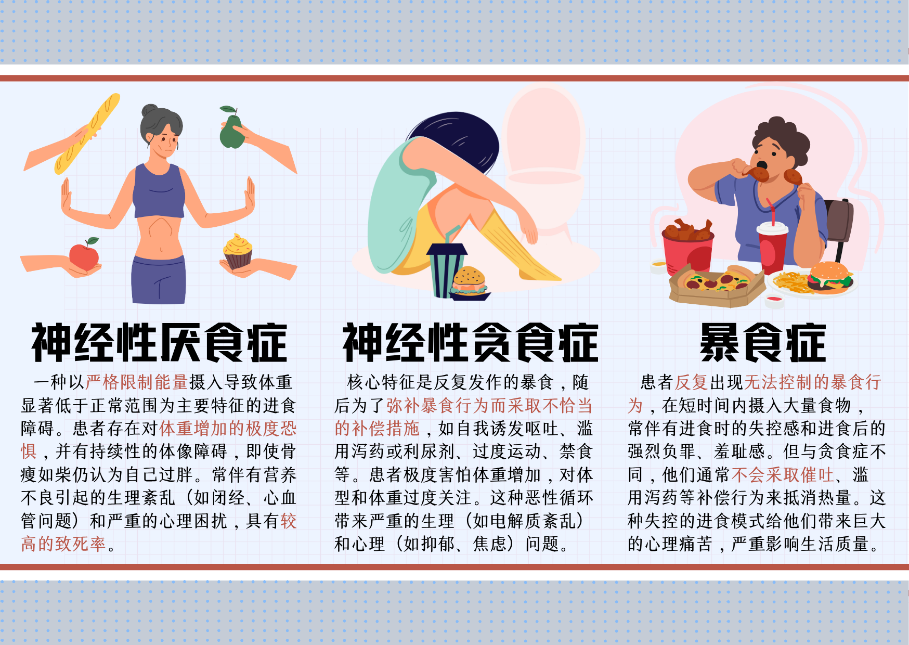
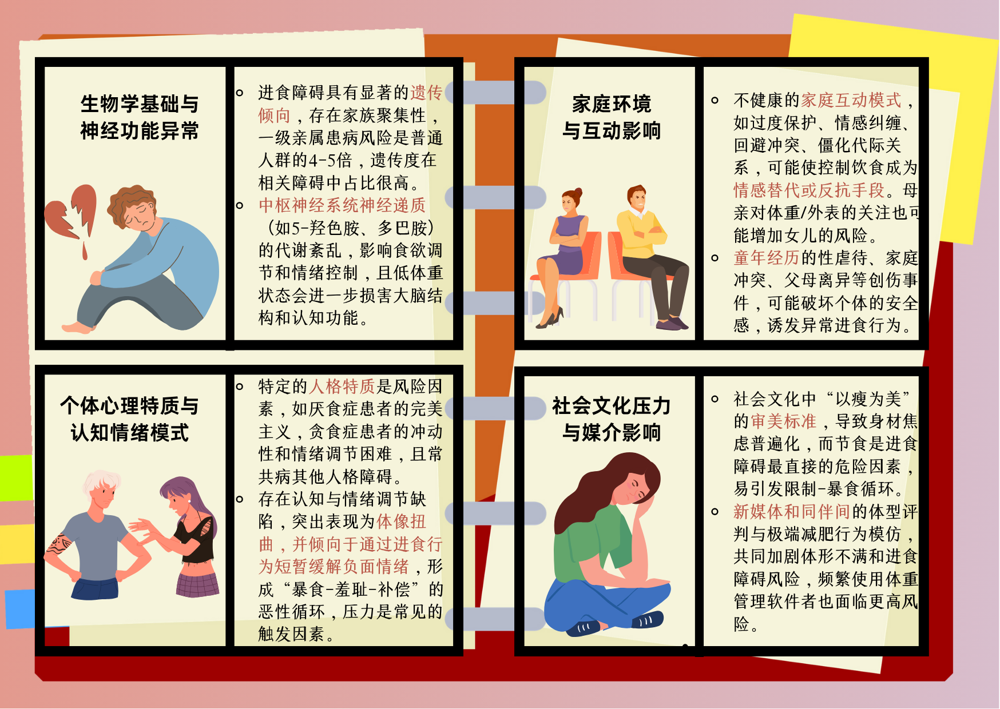
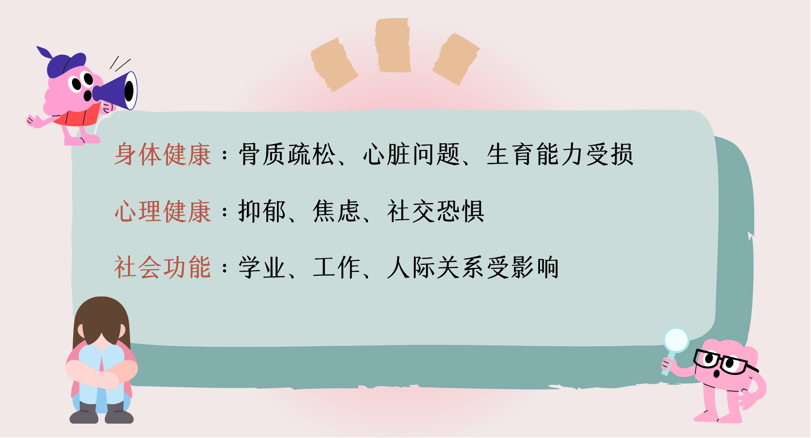
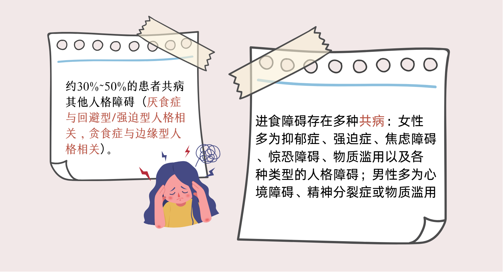

当食物成为敌人
我是小霜，今年20岁，是一名大二的学生。刚上大学时，和许多同龄人一样，为了拍出更好看的照片、穿上xs码的衣服，我会偶尔节食。刚开始的时候，我觉得自己只是在向“变瘦”的目标一点点靠近。可这种“自律”，很快就变了味。
一开始，我只是让自己晚餐不吃主食，然后慢慢变成一天只吃一个苹果、一杯脱脂奶。可是，长期的节食为身体敲响了警钟，饥饿感控制了我，我会突然暴饮暴食——一口气吃掉整整一袋坚果、一条巧克力、一大块面包。吃的时候，我的手在抖，脑子里不断计算着卡路里，焦虑一浪接一浪地袭来。于是，我跑去厕所催吐，吃阻断剂、吃泻药、跳绳、去健身房拼命跑步……体重秤上的数字主宰了我的情绪，哪怕只多了0.1公斤，我都会陷入崩溃的边缘。
吃，不吃，再吃，再不吃。我像被困进一个恶性循环的牢笼，每天醒来就是与食物的战斗。
现在，我只有35公斤，头发掉得越来越厉害，指甲变得又脆又软，走几步就满身大汗。有时我盯着镜子里的自己，脸色灰白、眼神空洞，我几乎快要认不出自己了。
家人一直劝我，可我根本不知道该怎么走出这泥潭。妈妈躲在房间里哭，我却无能为力。我真的不是不想吃饭——我只是无法停止催吐，无法不去服药。我的欲望、恐惧、强迫控制和崩溃混成一团，把我困在无尽的痛苦里。
我开始意识到，这不是“节食”或者“自律”那么简单。
数据背后的真相
三个月前，我打开手机，在浏览器的搜索框中写下：“为什么我总是控制不了吃东西？”“吃完东西就想吐是我什么？”——我想弄明白，我到底怎么了。大量搜索结果浮现在我眼前，它们都指向了同一个关键词——进食障碍（Eating Disorders, ED）。我了解到，一般来说，进食障碍分为三种类型：

我翻阅着资料，心里反而得到了一丝宽慰。因为我才知道——原来，我的挣扎，不是矫情，不是懒惰，不是意志力不够，而是一种心理疾病。既然是疾病，只要正确治疗，总有恢复正常的可能。
于是，我继续查找更多信息。

关于ED患者的数量，各方观点众说纷纭。有人估计，截至2019年，全世界一共有上千万的ED患者。而在中国，约有45.26万名10-24岁的青少年患有ED，相当于约每500名青少年中就有1人患病。相比1998年，患病率上涨了62.11%。患有进食障碍的大部分是女生，但男生患病率的增长速度甚至更快。
原来，越来越多像我一样的年轻人，在这颗星球、这片土地的某个角落里，也在被悄无声息地吞噬着。
我还注意到，在搜索引擎中，人们搜索“厌食症”的频率远高于“暴食症”“贪食症”。这或许说明人们对“进食障碍”的认识大多停留在“不吃”，却忽略了很多患者在长期的“禁食”之后不可控的、报复性的“暴食”。
在不同地区，人们对ED的关注度也不尽相同。北京、上海、广东等经济发达的地区，这些关键词的搜索量尤其突出。我猜，在那些经济不那么发达的地方，ED仍然被许多人认为是一种“矫情”，没有得到应有的正视与重视。
我也开始逛小红书、知乎、豆瓣……我发现，那里有无数个和我境遇相似的朋友。
孤独中的共鸣
我在社交平台上加入了几个ED互助小组。我并没有主动添加他们的好友，只是默默地看着他们的发言，就像在雾中看见了一点微光。
2025.05.01吃东西时极度负罪，脑中出现“吃人”的幻觉，却又疯狂渴望碳水和甜食。
2025.05.04早上吃完四根雪糕、饭菜后感到强烈厌恶，新鲜健康食物却吃不下。
2025.05.10每次吃饭都有幻觉，仿佛体内藏着一个贪婪的怪物和我一起咀嚼。
2025.05.17喝水都像别人灌进去的，吃饭好像是“交换灵魂”，我不知道自己到底在吞下什么。
2025.05.19每天早晨暴食，下午却完全不吃，用“控制”来对抗“混乱”。
2025.05.25吃雪糕时贪欲极强，尤其偏爱酸奶口味，吃完便陷入极度崩溃与麻木。
2025.06.02脑子反复跳出“胃溃疡”“高血糖”，一边吃，一边对自己进行精神拷问。
2025.06.06有时觉得自己是故意的，是在通过食物一点点毁灭自己。
2025.06.10今天吃完之后第一次刷了牙，像是在宣布“今天不再继续自毁”。
2025.06.13我试着去阳光下散步，对自己说：“这的确是我的身体，我在活着。”
在大家的发言中，我总是看到一些词句反复出现：
就医之路
为了还给自己一个健康的身体，为了不让爱我的父母和朋友们失望，我决定向医生寻求专业帮助。我鼓起勇气和妈妈说出了实情。她没有责怪我，只是抱着我，轻轻地抚摸着我的后背。她说：“只要你健健康康的，妈妈不会怪你。”
在我家的县城里，没有一家能够专业治疗进食障碍的医院。于是，在她的陪伴下，我来到了省城的一家三甲医院。
看病的医生阿姨很温柔，我在把我经历的痛苦告诉她后，她说：“进食障碍不是‘想太多’，也不是‘作’，它是真实存在的疾病。”他向我解释了病因的复杂性：

她还告诉我，进食障碍可能带来的长期影响包括：

听到这里，我暗中下定了决心：既然全世界都站在我的身后，那我一定有战胜病魔的毅力和决心。
复发不是失败
我终于出院了。但康复并非终点，而是一个全新的起点。
康复之路远非想象中那样一帆风顺。许多病友告诉我，他们在治疗进食障碍的同时，还要面对其他疾病的困扰：

我会害怕再胖回去，也会因为一点点的进食而心生愧疚。但这一次，我不再躲避，而是试着求助、表达、面对。
我开始记录我的每一次进步，比如吃完一顿饭不自责，比如逛街时不再偷偷捏自己肚子上的肉。
"康复不是终点，而是一个新的开始。我们都值得被爱，但第一步永远是爱自己"。
永远的告别
2023年5月，广东深圳15岁的女孩小玲（化名）因长期进食障碍去世。她原本活泼开朗，却因容貌焦虑，连续节食50天，最终永远闭上了双眼，离开时仅重24公斤。无独有偶，1983年2月，在大洋彼岸的美国，卡伦·卡朋特——那位用天使的嗓音唱出《Yesterday Once More》的美国女歌星，因厌食症后体重突然增加，心脏负荷过度，晕倒在卧室，心跳缓慢至停止，年仅32岁。
斯人已逝，只留下天堂中的歌声：
Every shalalala every wo'wo
Still shines
Every shing-a-ling-a-ling
That they're starting to sing
So fine
When they get to the part
Where he's breaking her heart
It can really make me cry
Just like before
It's yesterday once more
如今我还在康复的路上，每一天都在努力爱自己多一点。
如果你也和我一样，深陷类似的境遇，请记住这句话：
"我们都要有重新开始生活的勇气"。
全国心理援助热线：12355，我们与你同行。